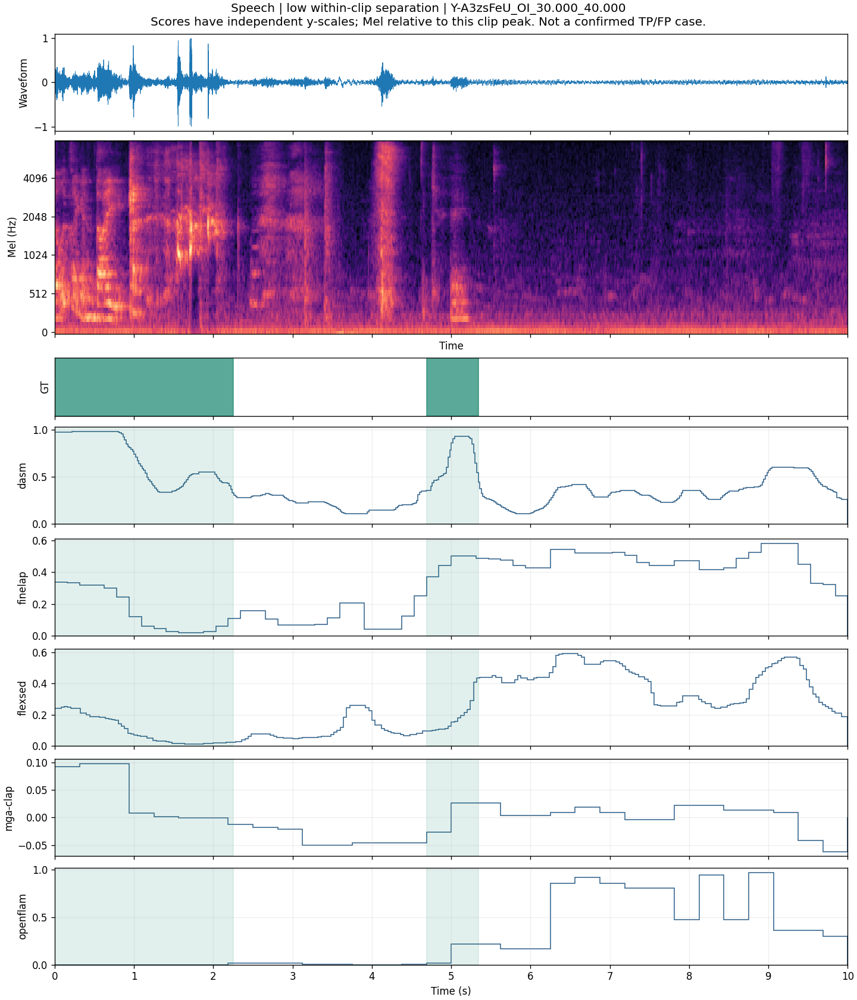
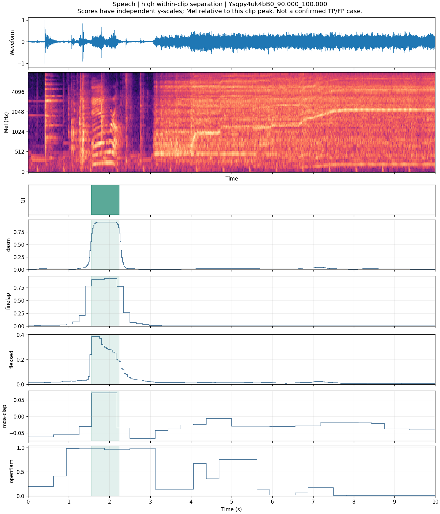
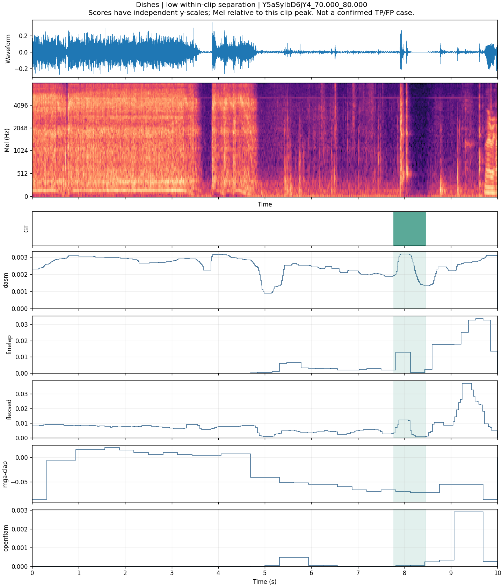
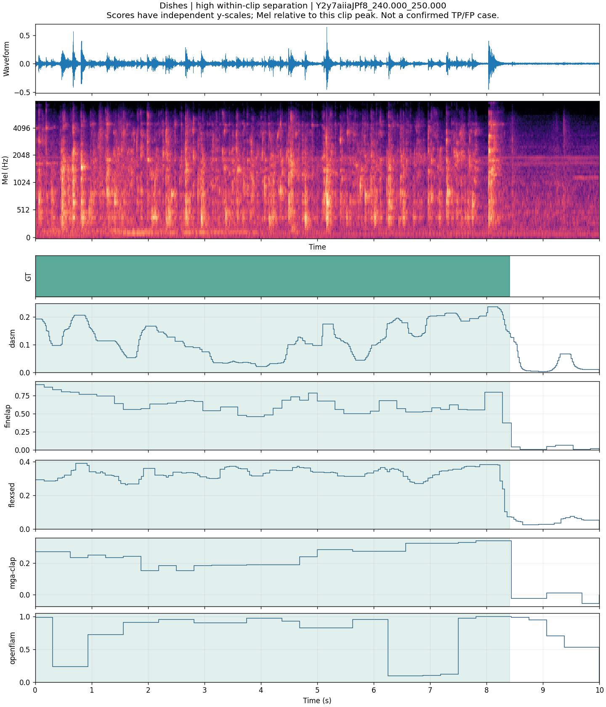
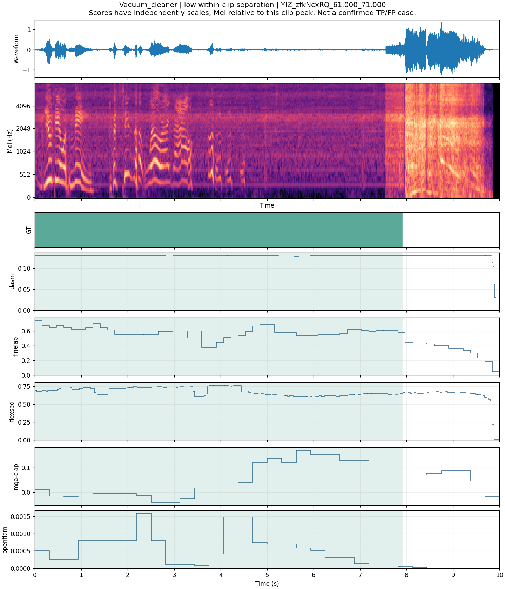
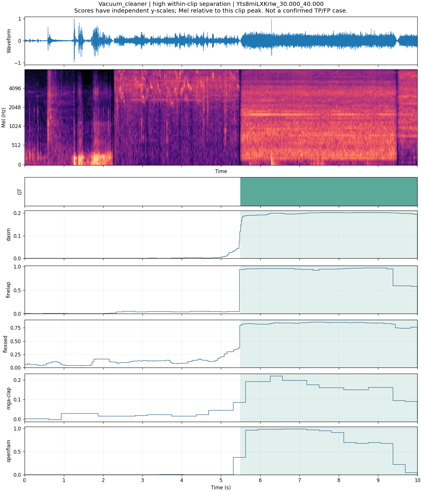
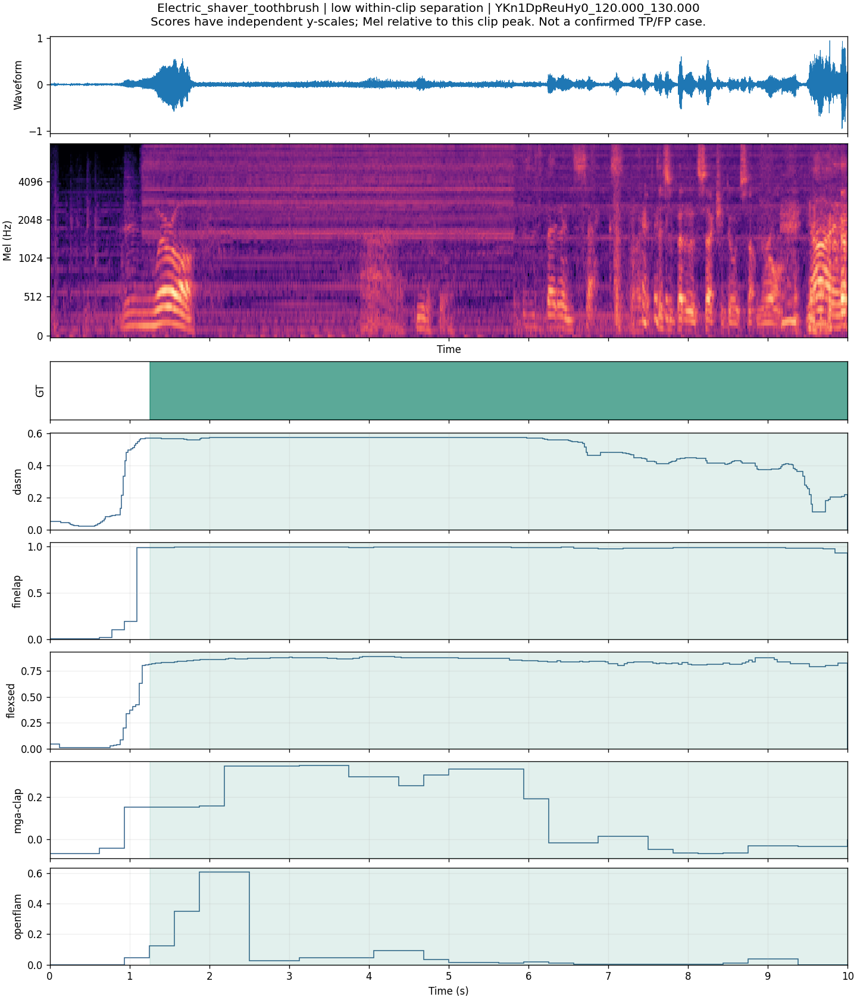
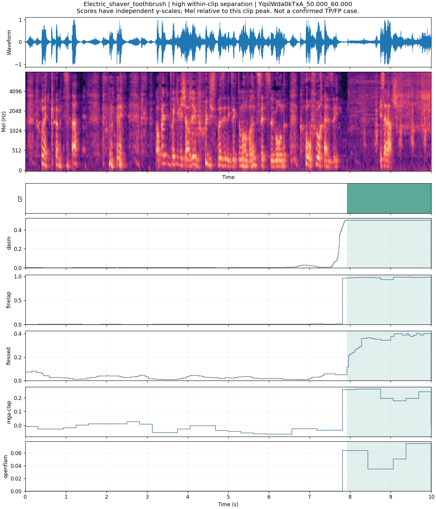

DESED Validation：时间分离度对照案例
划分说明：本页所有案例来自 DESED Validation，仅用于辅助诊断；不是 Public Test 案例。DESED 主成绩只使用 692 条公开测试音频。
这 8 条是按五个模型的片内 AUC 中位数选出的高低两端，仅用于探索；不是随机样本，也不是已确认的成功/失败事件。没有实际听辨确认。主指标仍是标准 PSDS1。
音频用于试听，已单声道化并重采样到 16 kHz；Mel 图逐音频峰值归一化，不能比较绝对响度。模型曲线保持原输出，各自独立纵轴，不能比较跨模型分数大小。
修订：已撤下任意阈值和预测区间，撤回基于这些区间的边界、误报或漏报横向判断。此页仅展示真值与连续响应；正式阈值须在验证集按统一规则选定。
Speech · low
先看模型分歧：真值为 0–2.252 秒、4.690–5.341 秒。DASM 对前段响应较高，第二段附近也有峰；FineLAP、FlexSED、OpenFLAM 则在 6–9 秒的未标注区间有较高响应。重点听这两部分：前段是什么样的语音，后段有没有未标出的语音或相似声音？仅凭图不能确认声源。这条不只是边界偏移，还出现了响应位置的差异。
Y-A3zsFeU_OI_30.000_40.000 · 片内 AUC 中位数 0.273 · 人工复核待完成

Speech · high
Ysgpy4uk4bB0_90.000_100.000 · 片内 AUC 中位数 1.000 · 人工复核待完成

Dishes · low
短事件与竞争响应：真值为 7.766–8.450 秒，约 0.684 秒；该音频还标有 Blender 和 Speech。DASM、FineLAP、FlexSED 在 8 秒附近有局部响应，但有些模型在其他时段响应更强；MGA-CLAP 的目标时段响应反而较低。优先听 8 秒附近及 9–10 秒，判断后者是相似干扰声还是可能漏标的同类声。这条提示类别选择性和时间定位都值得查。
Y5aSyIbD6jY4_70.000_80.000 · 片内 AUC 中位数 0.569 · 人工复核待完成

Dishes · high
同类的长事件对照：真值连续覆盖 0–8.406 秒，同时标有 Running_water。FineLAP、FlexSED、MGA-CLAP 在目标结束后明显下降；OpenFLAM 在标注区间内部仍多次低响应。与上一条相比，同样叫 Dishes，事件形态差别很大。可以一起听：这段是否是连续的餐具操作，短事件又是否是单次碰撞；这是待听辨的问题，不是已确认的声音描述。
Y2y7aiiaJPf8_240.000_250.000 · 片内 AUC 中位数 1.000 · 人工复核待完成

Vacuum_cleaner · low
YIZ_zfkNcxRQ_61.000_71.000 · 片内 AUC 中位数 0.612 · 人工复核待完成

Vacuum_cleaner · high
Yts8miLXKrIw_30.000_40.000 · 片内 AUC 中位数 1.000 · 人工复核待完成

Electric_shaver_toothbrush · low
YKn1DpReuHy0_120.000_130.000 · 片内 AUC 中位数 0.887 · 人工复核待完成

Electric_shaver_toothbrush · high
YqslWda0kTxA_50.000_60.000 · 片内 AUC 中位数 1.000 · 人工复核待完成
